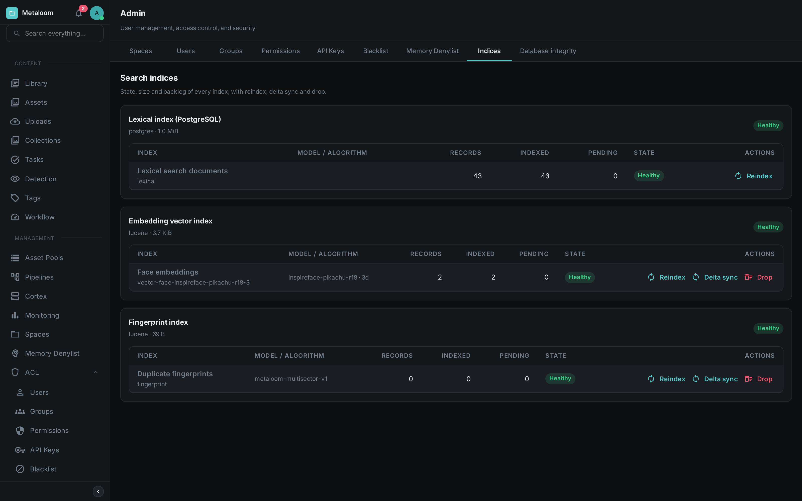
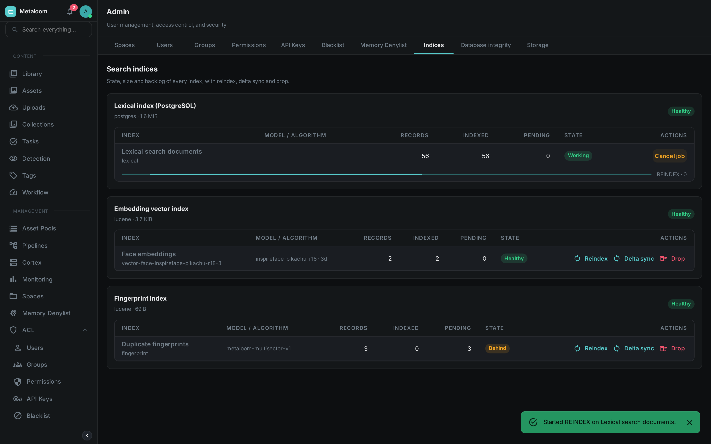

Loom keeps several indices so that searching, face matching and duplicate detection are fast. They are maintained automatically and you can normally ignore them. This page is for the times you cannot: after a bulk import, after changing an embedding model, or when search is returning less than you expect.
Every index on this page is a rebuildable cache. The originals live in the database, and an index can be emptied and reconstructed from them at any time without losing anything.
Open Admin → Indices in the Loom UI to see all of them at once.

Each card is a storage area; the rows beneath it are the indices kept there. In the screenshot the lexical index holds 43 documents and matches the database exactly, the embedding vector index holds two face vectors, and the fingerprint index is switched on but has nothing in it yet because no media has been fingerprinted.
The Indices
| Index | What it holds | What it powers |
|---|---|---|
Lexical search documents |
The searchable text of every asset: filename, path, transcripts, captions, extracted metadata, tags |
The search box and |
Face embeddings |
One numeric fingerprint per detected face |
"Who else appears in this photo", face clustering |
Semantic text embeddings |
One numeric fingerprint per asset, describing what it is about |
Meaning-based search, where "sunset over water" finds a beach clip that never uses those words |
Duplicate fingerprints |
One perceptual fingerprint per media file |
Near-duplicate detection and the deduplication review queue |
Face and semantic embeddings are only present if you run the corresponding pipeline nodes, and semantic search additionally needs an embedding service. An index that is not configured is shown as Disabled with the reason, rather than hidden — so you can tell "switched off" from "broken".
Reading the Screen
Each index shows two counts side by side, and their disagreement is the useful part.
Records is what the database holds. Indexed is what the index holds. When they match, the index is current.
| State | Meaning |
|---|---|
Healthy |
The index matches the database. Nothing to do. |
Behind |
New material is waiting to be indexed. This is normal shortly after an import and clears on its own, usually within seconds. If it does not fall over several minutes, something upstream is stuck. |
Drifted |
The index holds more entries than the database does — leftovers from assets that were deleted while the index was unavailable. Run a Delta sync. |
Working |
A maintenance job is running. Its progress is shown beneath the row. |
Unavailable |
The index is switched on but could not be opened. This is a fault worth investigating; the reason is shown when you hover the state. |
Disabled |
The index is not switched on for this installation. Not a fault. |
Size on disk is shown once per storage area rather than per index, because several indices share the same files and there is no honest way to split the figure between them.
Maintenance Actions
Actions start a background job. You can leave the screen; the job keeps running and its progress reappears when you come back. Only one job runs per index at a time.

While a job runs, the index switches to Working, a progress bar appears beneath it, and the action buttons are replaced by Cancel job. Cancelling is polite rather than abrupt: the job stops at the next item, and whatever it had already written stays written — these operations can always be run again. The bar above is deliberately indeterminate; see the note under Reindex.
- Reindex
-
Empties the index and rebuilds it from the database. Always safe, but it walks your whole library, so it can take a while — and while it runs, that index returns less than the full picture. Use it after changing an embedding model, after restoring a backup, or when an index has drifted badly enough that a delta sync is not worth it.
The lexical index rebuilds in a single database operation, so it cannot report a percentage and its progress bar simply sweeps until it finishes. The other indices are walked item by item and do show a real percentage.
- Delta sync
-
Writes what is missing, refreshes what changed, and removes leftovers. Much cheaper than a reindex and the right first response to Behind or Drifted. This is the only action that removes leftovers — a reindex gets rid of them for free by starting from empty.
NoteFor semantic text embeddings, a delta sync sends every changed asset to your embedding service. If that service is metered, this action costs money. It is never triggered automatically by opening the screen. - Drop
-
Empties the index without refilling it. Searches against it return nothing until you reindex. Nothing is lost — the source data is untouched — but it is a visible outage of that feature, so it asks for confirmation. Use it when retiring a superseded embedding model.
The lexical index offers only Reindex. It is kept up to date by the database itself as you work, so it cannot fall behind, and there is nothing to gain by emptying it.
|
Tip
|
After a drop or a large delta sync the reported size on disk does not shrink immediately. The space is reclaimed in the background over the following minutes. |
Permissions
Two permissions control this screen, so you can let someone watch without letting them act.
| Permission | Allows |
|---|---|
|
Viewing the screen: sizes, backlogs, which model produced an index, and job history. Changes nothing. |
|
Starting a reindex, a delta sync or a drop. |
Assign them under Admin → Permissions, or to an API key under Admin → API Keys.
Configuration
The index backends are opt-in. See Configuration for the full list; the relevant settings are:
| Setting | Default | Effect |
|---|---|---|
|
|
Set to |
|
|
Where those indices are stored on disk |
|
|
Enables the duplicate fingerprint index |
|
|
Where it is stored on disk |
|
|
Enables semantic search; also needs |
Both index directories should be on persistent storage in production. If they are lost, nothing is gone — but every affected index has to be rebuilt before those features work again.
|
Tip
|
To see the duplicate index working on the demo container, start it with
LOOM_SIMILARITY_ENABLED=true, then open Admin → Indices and run a Reindex on the fingerprint
row. The demo database ships fingerprints for its videos, including one pair that is the same footage
at two resolutions, so the duplicate review queue and the near-duplicate lookup both have something
real to show. The reindex is needed because the fingerprints were seeded straight into the database
while the index was switched off.
|
On Kubernetes, set these through extraEnv in the Helm chart values.